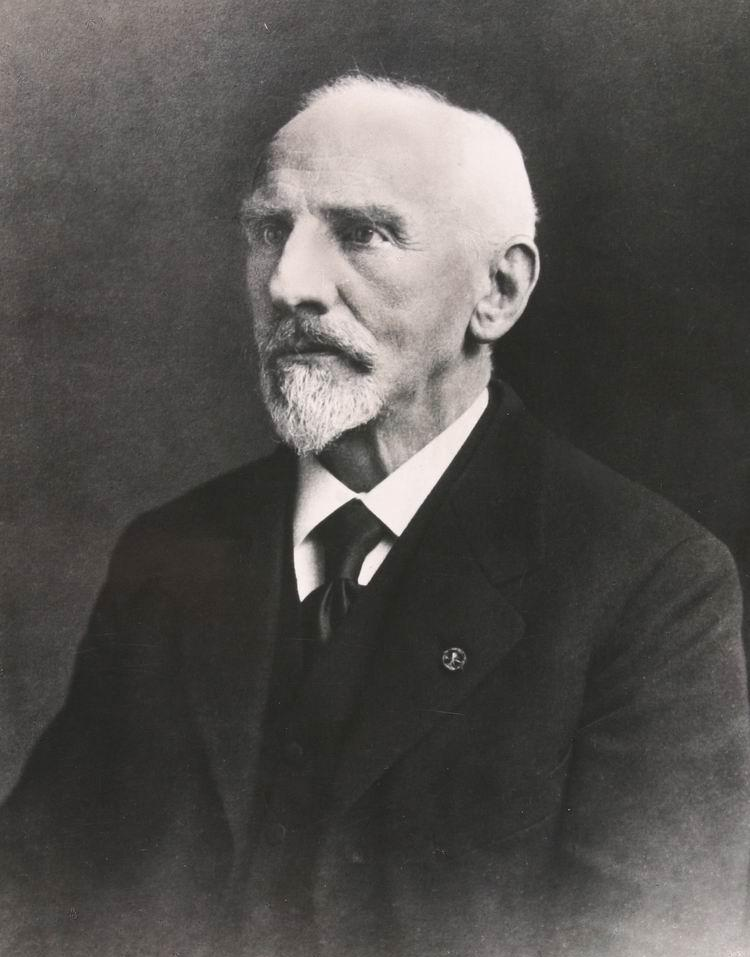
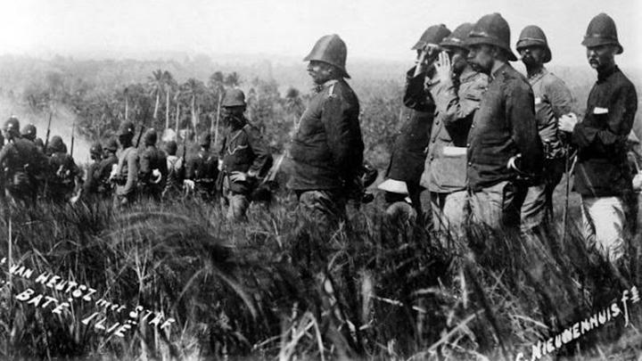

PERKENALAN
Sesuai dengan yang kami sampaikan sebelumnya, bahwa website ini kami buat sebagai referensi kalian mengenai materi Perlawanan Kesultanan Aceh dan juga sebagai wadah kami untuk memenuhi tugas kelompok pada mata pelajaran sejarah kami. So, kami akan menyampaikan perkenalan pada kelompok kami.
KELOMPOK 2
Topik : Perlawanan terhadap kolonialisme sebelum lahirnya kesadaran nasional
Materi : Perlawanan Kesultanan Aceh
Anggota Kelompok
1. Abulfida Akmal
2. Azizah Nabilah Ramadani
3. Nur Hikma
LATAR BELAKANG
Materi yang akan kami bahas yakni mengenai perlawanan kesultanan aceh nih!!! Eitss, sebelum itu kami akan membahas secara ringkas terlebih dahulu tentang topik kami yang berjudul Perlawanan terhadap kolonialisme sebelum lahirnya kesadaran nasional.
Ciri-ciri Perlawanan yang terjadi Sebelum Lahirnya Kesadaran Nasional
-
Bersifat lokal
Perlawanan dilakukan oleh tiap-tiap kerajaan yang merasa, martabatnya dilecehkan dan kedaulatannya dilanggar
-
Bergantung pada seorang pemimpin kharismatik
Perlawanan dipimpin oleh seorang raja, bangsawan, pemuka agama yang dianggap memiliki kesaktian dan kekuaihi manusia biasa. Namun karena terlalu bergantung, rakyat akan tercerai berai dan perlawanan berhenti ketika pemimpin itu tewas
- Perlawanan bersifat fisik atau mengandalkan kekuatan senjata Mengandalkan berbagai jenis senjata tradisional khas daerah (bambu runcing, kelewang, pedang, dsb.
-
Mudah dipecah-belah
Mudah dipengaruhi dengan imbalan untuk melakukan pengkhianatan (devide et impera)
Pembahasan
I. Perang Aceh
Perang Aceh adalah perang antara Kesultanan Aceh melawan penjajah Belanda. Menurut sumber yang kami dapatkan bahwa, perang ini berlangsung lama mulai 1873 sampai tahun 1910. Artinya, perang ini berlangsung selama 31 tahun. Belanda menyatakan perang kepada Aceh pada tanggal 26 Maret 1873. Kesultanan Aceh Darussalam tidak mau menyerah meski Belanda menggempur dan menyerang kota Serambi Mekkah.
Dalam sejarahnya, perang Aceh ini terbagi dalam empat fase yang berlangsung dari tahun 1873 hingga 1904. Perang ini terjadi karena ambisi Belanda yang ingin menguasai seluruh wilayah Nusantara pada abad ke 19 Masehi. Butuh waktu yang lama bagi bangsa asing tersebut untuk bisa menundukan wilayah Aceh, lantaran rakyat aceh yang memiliki jiwa pantang menyerah dan semangat jihad yang tinggi, sehingga sulit dikalahkan dengan menggunakan strategi yang biasa.
Dilansir dari Wikipedia, perang Aceh pertama terjadi pada tahun 1873 sampai 1874 yang dipimpin oleh Panglima Plim dan Sultan Machmud Syah. Dari fase ke fase yang berjalan cukup lama, muncul tokoh-tokoh perjuangan dari tanah rencong yang terlibat dalam upaya perlawanan terhadap penjajah Belanda. Begitu pula dari pihak Belanda, sejumlah nama bergantian dalam memimpin misi menaklukkan Aceh. Pada akhirnya, Belanda berhasil menguasai Aceh sepenuhnya pada tahun 1904 dengan pembubaran Kesultanan Aceh. Sultan Aceh Muhammad Daud Syah menyerah pada Januari 1904, akan tetapi perlawanan rakyat Aceh yang dipimpin oleh raja-raja feodal atau Uleebalang dan para ulama dengan perang gerilya masih berlangsung hingga 1915 dan perlawanan sporadis rakyat Aceh terus berlanjut hingga 1942.
II. Latar Belakang & Penyebab Perang Aceh

Perang Aceh
Tanggal : 1873-1915 Perlawanan sporadis berlanjut hingga 1942
Lokasi : Kesultanan Aceh dan Wilayah perlindungan Kesultanan Aceh
Setelah Malaka jatuh ke tangan Portugis tahun 1511, banyak pedagang islam yang menyingkir dari Malaka menuju Aceh. Dengan demikian, Aceh berkembang menjadi bandar dan pusat perdagangan. Perkembangan Aceh ini dipandang Portugis sebagai ancaman. Oleh karena itu, Portugis berkehendak untuk menghancurkan Aceh.
Penyebab terjadinya perang Aceh adalah
- karena Belanda berhasil menduduki daerah Siak (akibat Perjanjian Siak 1858). Di mana Sultan Ismail menyerahkan daerah Deli, Langkat, Asahan & Serdang kepada Belanda, padahal sejak pemerintahan Sultan Iskandar Muda daerah tersebut sudah berada di bawah kekuasaan Aceh.
- Belanda melanggar perjanjian Siak, maka berakhir perjanjian London tahun 1824. Isi perjanjian London adalah Belanda dan Britania Raya membuat ketentuan tentang batas-batas kekuasaan kedua daerah di Asia Tenggara dengan garis lintang Singapura dan keduanya mengakui kedaulatan Aceh. Aceh menuduh Belanda tak menepati janjinya, sehingga kapal-kapal Belanda yang melewati perairan Aceh ditenggelamkan oleh pasukan Aceh. Perbuatan Aceh tersebut didukung Britania.
- Dibukanya Terusan Suez oleh Ferdinand de Lesseps yang menyebabkan perairan Aceh menjadi sangat penting untuk lalu lintas perdagangan
- Ditandatanganinya Perjanjian London pada tahun 1871 antara Inggris dan Belanda yang berisi tentang Britania memberikan keleluasaan kepada Belanda untuk mengambil tindakan di Aceh. Belanda harus menjaga keamanan lalu lintas di Selat Malaka. Belanda mengizinkan Britania bebas berdagang di Siak dan menyerahkan daerahnya di Guyana Barat kepada Britania.
- Akibat perjanjian Sumatera 1871, Aceh mengadakan hubungan diplomatik dengan Konsul Amerika Serikat, Kerajaan Italia, Kesultanan Usmaniyah di Singapura serta mengirimkan utusan ke Turki Usmani pada tahun 1871. Akibat hubungan diplomatik Aceh dengan Konsul Amerika, Italia dan Turki di Singapura, Hal itu dijadikan Belanda sebagai alasan untuk menyerang Aceh. Wakil Presiden Dewan Hindia Frederik Nicolaas Nieuwenhuijzen dengan 2 kapal perangnya datang ke Aceh dan meminta keterangan dari Sultan Machmud Syah tentang apa yang sudah dibicarakan di Singapura tetapi Sultan Machmud menolak untuk memberikan keterangan.
III. Periode Perang Aceh

- Perang Aceh Pertama (1873-1874) Dipimpin oleh Panglima Polim dan Sultan Machmud Syah melawan Belanda yang dipimpin Kohler. Kohler dengan 3000 serdadunya dapat dipatahkan, di mana Kohler sendiri tewas pada tanggal 14 April 1873. Sepuluh hari kemudian, perang berkecamuk di mana-mana. Yang paling besar yakni pada saat merebut kembali Masjid Raya Baiturrahman, yang dibantu oleh beberapa kelompok pasukan. Ada di Peukan Aceh, Lambhuk, Lampu'uk, Peukan Bada, sampai Lambada, Krueng Raya. Beberapa ribu orang juga berdatangan dari Teunom, Pidie, Peusangan, dan beberapa wilayah lain.
- Perang Aceh Kedua (1874-1880). Pasukan Belanda dipimpin oleh Jenderal Jan van Swieten. Belanda berhasil menduduki Keraton Sultan pada tanggal 26 Januari 1874 dan dijadikan sebagai pusat pertahanan Belanda. Pada 31 Januari 1874 Jenderal Van Swieten mengumumkan bahwa seluruh Aceh jadi bagian dari Kerajaan Belanda. Ketika Sultan Machmud Syah wafat 26 Januari 1874 digantikan oleh Tuanku Muhammad Dawood yang dinobatkan sebagai Sultan di masjid Indrapuri. Perang pertama dan kedua ini adalah perang total dan frontal, di mana pemerintah masih berjalan mapan meskipun ibu kota negara berpindah-pindah ke Keumala Dalam, Indrapuri, dan tempat-tempat lain.
- Perang ketiga (1881-1896) Perang dilanjutkan secara gerilya dan dikobarkan sebagai perang fi sabilillah. Di mana sistem perang gerilya ini dilangsungkan sampai tahun 1903. Dalam perang gerilya ini pasukan Aceh di bawah Teuku Umar bersama Panglima Polim dan Sultan. Pada tahun 1899 ketika terjadi serangan mendadak dari pihak Van der Dussen di Meulaboh, Teuku Umar gugur. Tetapi Cut Nyak Dhien istri Teuku Umar kemudian tampil menjadi komandan perang gerilya.
- Perang keempat (1896-1910) Adalah perang gerilya kelompok dan perorangan dengan perlawanan, penyerbuan, penghadangan dan pembunuhan tanpa komando dari pusat pemerintahan Kesultanan.
IV. Strategi Snouck Hurgronje

Untuk mengalahkan pertahanan dan perlawanan yang dilakukan Aceh, Belanda menggunakan tenaga ahli Dr. Christiaan Snouck Hurgronje yang menyamar selama 2 tahun di pedalaman Aceh untuk meneliti kemasyarakatan dan ketatanegaraan Aceh. Hasil kerja mata-mata tersebut dibukukan dengan judul Rakyat Aceh (De Acehers).
Usulan strategi Snouck Hurgronje kepada Gubernur Militer Belanda Joannes Benedictus van Heutsz adalah supaya golongan Keumala (yaitu Sultan yang berkedudukan di Keumala) dengan pengikutnya dikesampingkan dahulu. Tetap menyerang terus dan menghantam terus kaum ulama, jangan mau berunding dengan pimpinan-pimpinan gerilya dan mendirikan pangkalan tetap di Aceh Raya. Menunjukkan niat baik Belanda kepada rakyat Aceh, dengan cara mendirikan langgar, masjid, memperbaiki jalan-jalan irigasi dan membantu pekerjaan sosial rakyat Aceh.
Ternyata siasat Dr Snouck Hurgronje diterima oleh Van Heutz yang menjadi Gubernur militer dan sipil di Aceh (1898-1904). Kemudian Dr Snouck Hurgronje diangkat sebagai penasihatnya.
V. Taktik Perang

- Taktik perang gerilya Aceh ditiru oleh Van Heutz di mana dibentuk pasukan marechaussee yang dipimpin oleh Hans Christoffel dengan pasukan Colone Macan yang telah mampu dan menguasai pegunungan-pegunungan, hutan-hutan rimba raya Aceh untuk mencari dan mengejar gerilyawan-gerilyawan Aceh.
- Taktik berikutnya yang dilakukan Belanda adalah dengan cara penculikan anggota keluarga gerilyawan Aceh. Misalnya Christoffel menculik permaisuri Sultan dan Teungku Putroe (1902). Van der Maaten menawan putera Sultan Tuanku Ibrahim. Akibatnya, Sultan menyerah pada tanggal 5 Januari 1902 ke Sigli dan berdamai. Van der Maaten dengan diam-diam menyergap Tangse kembali, Panglima Polim dapat meloloskan diri tetapi sebagai gantinya ditangkap putera Panglima Polim, Cut Po Radeu saudara perempuannya dan beberapa keluarga terdekatnya. Akibatnya Panglima Polim meletakkan senjata dan menyerah ke Lhokseumawe pada Desember 1903. Setelah Panglima Polim menyerah, banyak penghulu-penghulu rakyat yang menyerah mengikuti jejak Panglima Polim.
- Taktik selanjutnya, yakni pembersihan dengan cara membunuh rakyat Aceh yang dilakukan di bawah pimpinan Gotfried Coenraad Ernst van Daalen yang menggantikan Van Heutz. Seperti pembunuhan di Kuta Reh (14 Juni 1904) di mana 2.922 orang dibunuhnya, yang terdiri dari 1.773 laki-laki dan 1.149 perempuan.
- Taktik terakhir, yakni menangkap Cut Nyak Dhien istri Teuku Umar yang masih melakukan perlawanan secara gerilya, di mana akhirnya Cut Nya Dien dapat ditangkap dan diasingkan ke Sumedang.
VI. Surat Perjanjian Tanda Menyerah

Selama perang Aceh, Van Heutz telah menciptakan surat pendek (korte verklaring, Traktat Pendek) tentang penyerahan yang harus ditandatangani oleh para pemimpin Aceh yang telah tertangkap dan menyerah. Di mana isi dari surat pendek penyerahan diri itu berisikan, Raja (Sultan) mengakui daerahnya sebagai bagian dari daerah Hindia Belanda, Raja berjanji tidak akan mengadakan hubungan dengan kekuasaan di luar negeri, berjanji akan mematuhi seluruh perintah-perintah yang ditetapkan Belanda. Perjanjian pendek ini menggantikan perjanjian-perjanjian terdahulu yang rumit dan panjang dengan para pemimpin setempat.
Walau demikian, wilayah Aceh tetap tidak bisa dikuasai Belanda seluruhnya, dikarenakan pada saat itu tetap saja terjadi perlawanan terhadap Belanda meskipun dilakukan oleh sekelompok orang (masyarakat). Hal ini berlanjut sampai Belanda enyah dari Nusantara dan diganti kedatangan penjajah baru yakni Jepang (Nippon).
VII. Jalannya Perlawanan Rakyat Aceh
Aceh sudah melakukan beberapa persiapan untuk menghadapi perang ini. Misalnya membangun pos-pos pertahanan, peningkatan jumlah pasukan, dan pasokan senjata. Tentara Belanda menginjakkan kaki di Serambi Mekah pada tanggal 5 April 1873. Pasukan Aceh yang terdiri dari para ulebalang, ulama, dan rakyat tidak mudah ditundukkan.
Pasukan Aceh dibawah pimpinan Teuku Imeum Lueng Bata kemudian melawan tentara Belanda pimpinan Kohler untuk memperebutkan Masjid Raya Baiturrahman. Dalam pertempuran tersebut Kohler terbunuh. Dengan demikian gagal-lah serangan tentara Belanda yang pertama.
Kemudian pada tanggal 9 Desember 1873 Belanda melakukan serangan yang kedua dipimpin oleh J. van Swieten. Masjid Raya Baiturrahman dan Istana Sultan jatuh ke tangan Belanda. Meski demikian, rakyat Aceh tidak menyerah begitu saja. Di seluruh Aceh dikobarkan Perang Fii Sabilillah. Para pemimpin perang antara lain adalah Tengku Cik Di Tiro, Panglima Polim, dan Tuanku Hasyim.
Gerakan pasukan Teuku Umar juga banyak berpengaruh pada jalannya perlawanan. Setelah Teuku Umar gugur pada 1899, perlawanan dilanjutkan Cut Nyak Dien. Tokoh lainnya yang berperan dalam Perang Aceh adalah Habib Abdurrahman, Teungku Mahyidin Tiro, dan Cuk Nyak Mutia.
VIII. Tokoh Perang Aceh
1. Teuku Cik Ditiro
Tokoh penting selama perang Aceh dari Indonesia adalah Teuku Cik Ditiro yang menjadi pemimpin pasukan. Ketika itu Teuku Cik Ditiro melawan pemimpin van der Heyden ketika menyerah Aceh Besar. Teuku Cik Ditiro kemudian gugur di tahun 1891.
2. Teuku Umar
Berlanjut di tahun 1893, Teuku Umar melakukan penyerangan. Selain itu Teuku Umar berhasil meloloskan diri pada Maret 1896, setelah ditawan. Teuku Umar kemudian gugur di Meulaboh pada 11 Februari 1899.
3. Sultan Daud
Syah dan Panglima Polim Kedua tokoh di atas melakukan perlawanan sampai akhirnya dipaksa menyerah pada Belanda.
4. Tjut Nyak Dien
Cut Nyak Dhien termasuk Pahlawan Nasional dari Aceh. Cut Nyak Dhien melanjutkan perjuangan sang ayah melawan pemerintah Belanda.Sampai akhirnya Cut Nyak Dhien dan pengikutnya ditangkap pada 7 November 1905. Tokoh Pahlawan ini diasingkan ke Sumedang, Jawa Barat. Tanggal 6 November 1908, Cut Nyak Dhien meninggal di tempat pengasingan.

5. Cut Meutia
Cut Meutia termasuk Pahlawan Nasional dari Aceh. Lahir tahun 1870, Cut Meutia menjadi anak perempuan satu-satunya dari lima bersaudara.Cut Meutia melakukan perang gerilya dan spionasi melawan Belanda ditahun 1901. Suaminya Cik Tunong dijatuhkan hukuman tembak mati oleh Belanda.
Setelah suaminya tewas, Cut Meutia tetap melanjutkan perang bersama Pang Nanggroe. Perlawanan tersebut berakhir 25 September 1910.
Setelah Pang Nanggroe meninggal dunia, Cut Meutia tetap mengikuti perang gerilya. Pada 25 Oktober 1910, Cut Meutia meninggal dunia di medan perang.
IX. Akhir Peperangan
Menurut Snouch Hurgronje, Belanda mengutus Jenderal Van Heutsz untuk melakukan serangan umum di wilayah Aceh Besar, Pidie dan Samalanga pada tahun 1899. Penyerangan tersebut dikenal dengan Serangan Sapurata oleh pasukan Marchausse (arsose) yang terdiri dari orang Indonesia yang telah mendapatkan pelatihan dari Belanda.
Semangat juang rakyat aceh menjadi luntur dengan adanya pasukan Marchausse tersebut. Banyak pejuang aceh yang gugur sehingga rakyat aceh mulai menarik diri ke pedalaman. Namun Belanda tetap mengejar rakyat aceh hingga pedalaman dengan mengutus Jendral Van Daalen. Ketidaksiapan dan kurangnya perlengkapan yang dimiliki memubuat rakyat aceh kewalahan dan terpaksa mundur dari peperangan. Tidak membutuhkan waktu yang lama, Belanda menganggap bahwa meraka telah menguasai Aceh.
Belanda menciptakan suatu perjanjian dimana kerajaan kecil yang terkait dalam perjanjian ini harus patuh pada belanda dan semua kondisi politik diatur pihak Belanda, sehingga setiap kerajaan diharuskan untuk:
1. Membenarkan bahwa daerah kekuasaannya adalah bagian dari Belanda
2. Sepakat untuk tidak akan melakukan hubungan dengan pemerintah asing
3. Sepakat akan menaati segala perintah yang ditetapkan oleh pemerintah Belanda
X. Dampak Perang Aceh Bagi Rakyat Indonesia
Dampak Perang Aceh sebagai berikut:
1. Menguatnya rasa persatuan dan kesatuan diseluruh lapisan masyarakat Indonesia.
2. Jatuh banyak korban dipihak Aceh.
3. Perang yang berlangsung selama kurang lebih 33 tahun, membuat jatuhnya banyak korban dari pihak Aceh juga gugurnya beberapa panglima Perang Aceh.
4. Rakyat Indonesia menderita akibat tindakan kekerasan belanda.
5. Kerajaan-kerajaan Indonesia jatuh ke tangan belanda.
6. Rakyat Indonesia harus tunduk terhadap pemerintahan hindia belanda.
7. Biaya untuk mendanai sebuah perang tidaklah murah dan pemerintah Indonesia harus menyisihkan sebagian dari anggarannya untuk membiayai perang.
Penutup
Wah, meskipun pembahasan terkait materi Perlawanan Kesultanan Aceh lumayan banyak, tetapi kamu sudah berhasil untuk mencoba memahaminya sampai akhir, terima kasih ya!! Semoga dapat bermanfaat bagi kalian semua yaa!!!